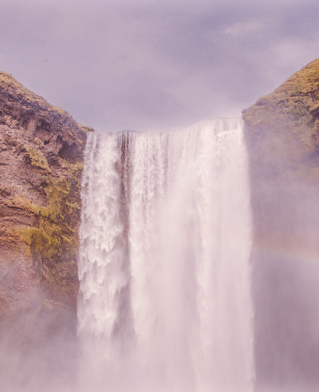
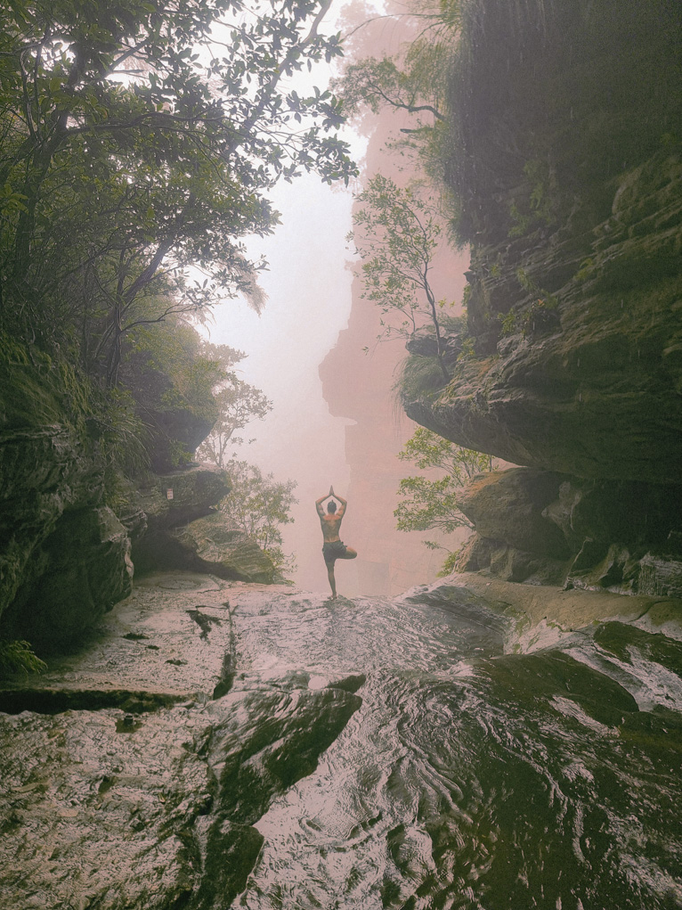

Välkommen!
Följande bilder tillhör en uppgift om bildbehandling, där bilderna har redigerats i syfte att vara enhetliga med varandra och webbplatsen. Programvarorna som har använts i redigeringen av bilderna är Lightroom Classic och Photoshop. Loggan har skapats med hjälp av Canva.

